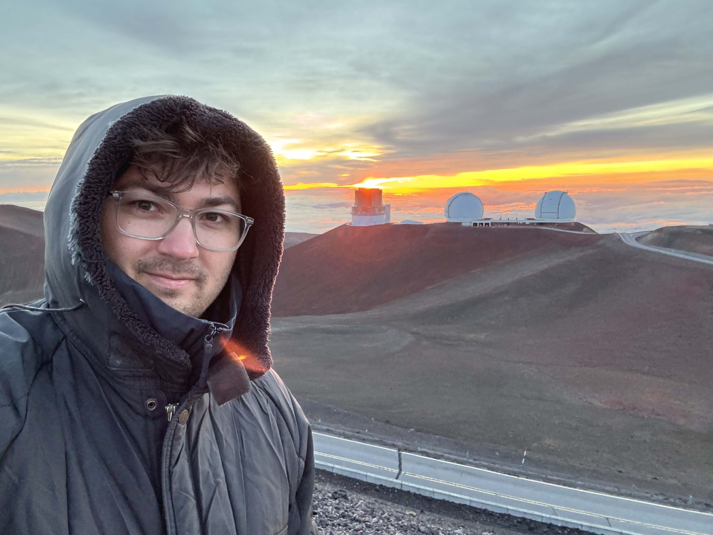
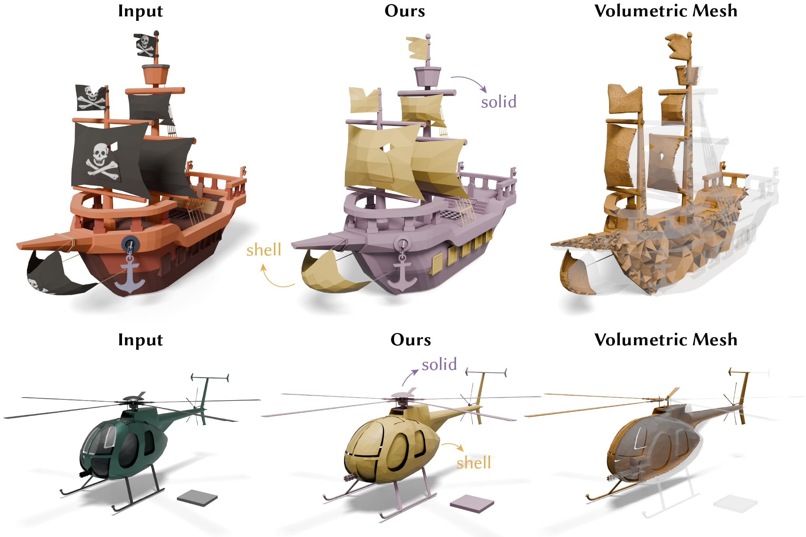

Hello! I'm Janos Meny, a mathematician by training and now a software engineer, specializing in geometry processing, optimization, and computer graphics. I studied mathematics at the University of Bonn, focusing on algebraic geometry during my bachelor's and on PDE-constrained optimization during my master's. Currently, I work on Roblox's game engine, focusing primarily on geometry processing algorithms, with additional work in collision, networking, and graphics. Previously, I was at nTop, working on implicit modeling and latticing tools for high-performance 3D printing applications.

A few projects I've worked on:

A SIGGRAPH Asia 2025 paper on labeling discrete surfaces with a solid-shell structure.
Authors: Siqi Wang, Janos Meny, Izak Grguric, Mehdi Rahimzadeh, Denis Zorin, Daniele Panozzo, and Hsueh-Ti Derek Liu.
I am broadly interested in various fields, including:
If you'd like to discuss math, technology, or any interesting projects, feel free to reach out to me.